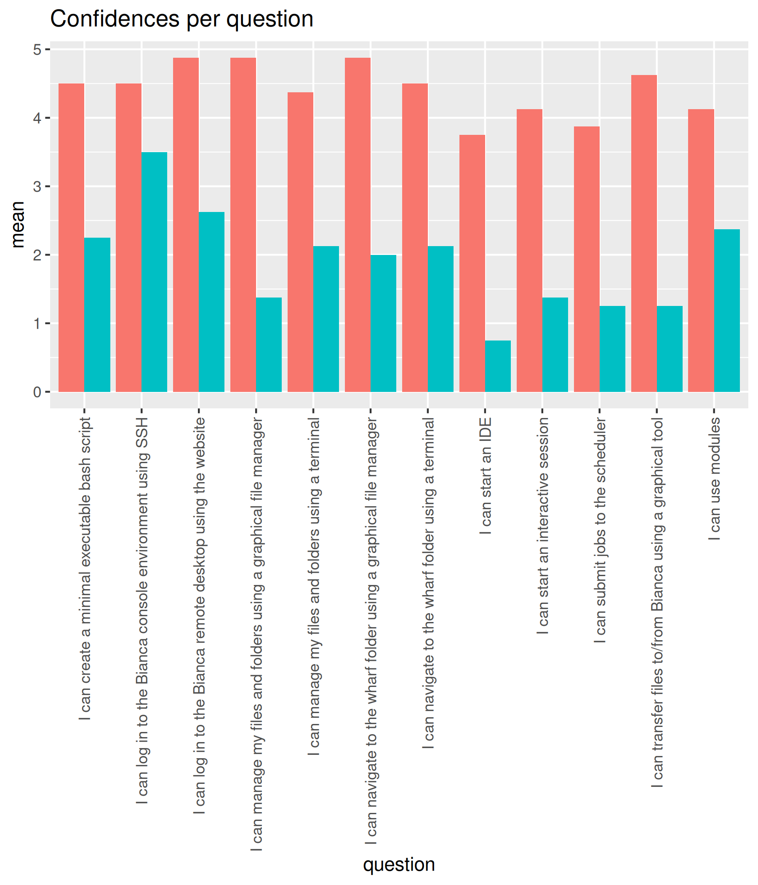
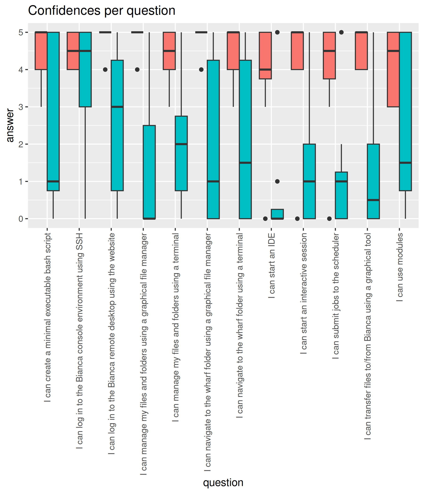

Evaluation¶
- Course: Basic
- Date: 2025-09-15
- Number of registrations: 23
- Number of learners showing up: ~12 (52% show-up rate)
- Number of evaluation results: 8 (67% fill-in rate)
- Analysis script
- Success score: 91%
- Evaluation results
- Any feedback results
- Reflection by Richel
Analysis note
One learner filled in zeroes at three later sessions at the end of the day. We hypothesize this learner left earlier. We modified the data to remove those zeroes.
Confidences¶


Say something positive about Björn¶
- very calm and knowledgeable
- great guy!
- organized, helped with login before the seminar
Say something about Björn he can improve¶
[no feedback]
Say something positive about Jayant¶
- very calm and loved the mentimeter
- great guy!
- organized and helpful
Say something about Jayant he can improve¶
[no feedback]
Say something positive about Pavlin¶
- Loved his transparency about the complexity of the commands
- clear instructions!
- organized and helpful
Say something about Pavlin he can improve¶
[no feedback]
Say something positive about Richèl¶
- Loved his energy!
- Very structured and clear, which is highly appreciated. Good with the "cold calls".
- Such a positive person and very good at getting students to teach each other
- organized and helpful
Say something about Richèl he can improve¶
[no feedback]
Any other feedback?¶
- Perhaps provide the respective Bianca workshop links before the course (unless you have already done so and I missed it...), so one can get a bit more familiar with some terms? Every teacher did a good job, so no individual feedback here. It was rather the topics that were challenging at different levels, depending on the existing (or non-existing) background knowledge that made it easier or difficult to follow (hence, perhaps "force" the course participants to complete some reading-up before the course, or make them watch certain videos, etc., that you feel are important for understanding everything). Could be done in the Canvas platform for example where you can also see if someone has not done the respective task.
- Gentle introduction to the topics, good pace, good selection of topics.
- The course is super helpful and thanks to all the instructors!
Any feedback¶
Love the team's energy and teaching styles, it made it easier to follow even though there were different teaching styles as well.
Richèl was a good energetic anchor and interactive teacher, Pavlin was a transparent teacher that encouraged extra-curricular knowledge, and jayant was very calm and knowledgeable. Love that he gave a summary of the course progress before he started his section too.
Pre-post analysis¶




| question | mean_pre | mean_post | p_value | different |
|---|---|---|---|---|
| I can log in to the Bianca remote desktop using the website | 2.625 | 4.875000 | 0.0106845 | TRUE |
| I can log in to the Bianca console environment using SSH | 3.500 | 4.500000 | 0.6854435 | FALSE |
| I can navigate to the wharf folder using a graphical file manager | 2.000 | 4.875000 | 0.0101293 | TRUE |
| I can manage my files and folders using a graphical file manager | 1.375 | 4.875000 | 0.0024739 | TRUE |
| I can navigate to the wharf folder using a terminal | 2.125 | 4.500000 | 0.0412186 | TRUE |
| I can manage my files and folders using a terminal | 2.125 | 4.375000 | 0.0342120 | TRUE |
| I can create a minimal executable bash script | 2.250 | 4.500000 | 0.0907979 | FALSE |
| I can use modules | 2.375 | 4.125000 | 0.1369613 | FALSE |
| I can transfer files to/from Bianca using a graphical tool | 1.250 | 4.625000 | 0.0045563 | TRUE |
| I can start an interactive session | 1.375 | 4.714286 | 0.0056481 | TRUE |
| I can submit jobs to the scheduler | 1.250 | 4.428571 | 0.0074946 | TRUE |
| I can start an IDE | 0.750 | 4.285714 | 0.0076924 | TRUE |